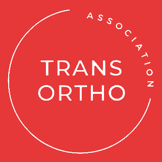

Étudiant en BTS SIO au Lycée Gaston Berger, Lille. Passionné par la création d'expériences numériques modernes et performantes.
Actuellement étudiant en BTS SIO (Services Informatiques aux Organisations), option SLAM (Solutions Logicielles et Applications Métiers) au lycée Gaston Berger de Lille.
Je me spécialise dans le développement web, avec une affinité particulière pour le back-end. Mon objectif est de concevoir des applications web qui sont non seulement fonctionnelles, mais aussi visuellement captivantes.
const developer = {
name: "Romain",
school: "Gaston Berger",
skills: ["HTML", "CSS", "JS"],
passion: true
};Brevet de Technicien Supérieur aux Services Informatiques aux Organisations option Solutions Logicielles et Applications Métiers.
Obtention du Baccalauréat Sciences et Technologies de l'Industrie et du Développement Durable spécialité Système Informatique et Numérique.
62 Boulevard Belfort, Lille
Voir les détails +3 Avenue Antoine Pinay, Hem
Voir les détails +
Dans le cadre de ma veille technologique, j'explore comment l'IA transforme le diagnostic, la chirurgie et la recherche médicale.
La Haute Autorité de Santé (HAS) et la Commission Nationale Informatique et Liberté (CNIL) mettent en consultation un projet de guide sur l'usage de l'intelligence artificielle "en contexte de soins".
Article Google Alerts
Lire l'article →Dans ce premier article, sur deux posts de son blog « Réalités biomédicales » consacrés à l’IA, Marc Gozlan décrit comment, confrontée à des cas complexes, elle dépasse le plus souvent le clinicien dans cette étape clé où le médecin énumère et hiérarchise les causes possibles d’un tableau clinique.
Article Newsletters
Lire l'article →Le déficit budgétaire de l’Assurance Maladie reflète les tensions d’un système de santé surchargé, caractérisé par un parcours de soins complexe. Dans ce contexte, l’intelligence artificielle (IA) offre des leviers concrets pour transformer le secteur médical : elle optimise la gestion du temps des professionnels de santé, facilite leur pratique quotidienne et promet une amélioration des résultats cliniques pouvant atteindre 40%.
Article Newsletters
Lire l'article →Description de l'article à compléter...
Source de l'article
Lire l'article →Description de l'article à compléter...
Source de l'article
Lire l'article →Description de l'article à compléter...
Source de l'article
Lire l'article →Compte rendu détaillé des missions effectuées.
Grille d'évaluation des compétences professionnelles.
Diplômes et certifications obtenus (MOOC, Pix...).
Documentation technique des projets présentés.